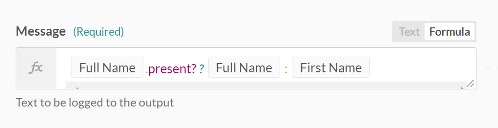

Fields mapping
Fields mapping is what we call inserting variables (datapills) or constants into input fields. This gives you control over what data moves from an app to another app.
Fields mapping is usually more relevant for actions as opposed to triggers, as we define data flows from the triggers or from previous steps into subsequent steps. In every step, we have to get data pills (variables) from the previous steps' datatrees and map them into the step's input fields. In this way, we're crafting a template that determines data flow in your recipe.
Fields mapping example
In the following example, we map the Account Name data pill from the Salesforce New account trigger into the Message input field in the Send email action.

Mapping the account name data pill into the message input field
Mapping constants VS mapping variables
Workato supports mapping of both constants and variables.
Mapping variables
The variable Account name has been mapped to the Name input field. This means that for every new Salesforce account that is created, the account name of this Salesforce account will be used as the organization name of the Zendesk organization that will be created. For example, a new Salesforce account named Sattei Winery will in turn create a Zendesk organization named Sattei Winery.

Input field with variable mapping
Mapping constants
On the other hand, the input field Notes has a constant mapped to it - the words "Synced over from Salesforce." This means that all newly created Zendesk organizations created via Workato will have the words "Synced over from Salesforce." in its Notes field.

Input field with constant mapping
Here's an example of the new Zendesk organization created via the above mapping:

Newly created Zendesk organization Sattei Winery
Mapping both constants and variables
Of course, you can also combine constants and variables in the input fields for the data you wish to have.
Data transformation
The data that an app holds doesn't always transfer easily to another app, for example:
- your sales app stores names by full name, but your marketing app requires first name, middle name and last name
- your ecommerce app stores addresses as individual fields, e.g. address line 1, address line 2, city, state, but your accounting app simply requires a single billing address and shipping address field
- the priority levels in your ticketing app may be low, medium, high, but in your sales system they're low, normal, urgent
In such cases, you need to work with the data from the source app and transform it into a suitable format for the target app. Workato supports data transformation via its formulas.
Data transformation via formula example
In the following example, we're using a ternary formula in formula mode to decide what value to pass into the input field Message. The formula is in this format:
[condition] ? [do this if true] : [do this if false]
Therefore, we're checking to see if there is any value in the Full name pill. If yes, we pass in Full name into the input field. If not, we pass in First name into the input field.

Common issues when mapping fields
Here are some of the common errors we've experienced when it comes to fields mapping
- Data pills with no values at run-time for required fields
At design-time (when we're building the recipe), all required fields are supposed to be mapped. The recipe will refuse to start and throw an error if a required field is left empty.
However, even if an input field has been mapped at design-time, it might not actually have a value at run-time (when a trigger event comes in and a job is being processed). In such a case, that specific job will throw an error and fail.
You would need to decide how to handle such cases whereby a required field might not receive a value at run-time. If that is rightly a business logic error which needs to be resolved, e.g. the recipe tries to move a new lead from a sales app to a marketing app, but finds that it's missing an email address for the lead, the answer might be to let the job fail and flag the employee who had created the lead record.
- Data pills from the wrong datatree
When mapping input fields with data pills, it is common to find pills with the same names in the datatrees, e.g. if you're moving customers from an app to another, customer datatrees tend to hold address information. Hence you might find yourself using a pill with the right name, e.g. City, State, Country, but from the wrong datatree.
- Data pills from the wrong part of the recipe If your recipe has conditional steps, e.g. if customer is present, update customer record, and if customer is not present, create customer record, then for each job that's processed, there will be steps that are not carried out. In such cases, the values in the datatree for these steps will most likely be blank.
If you're using data pills from these steps, you need to recognize the potential of these pills being null, and handle that scenario.